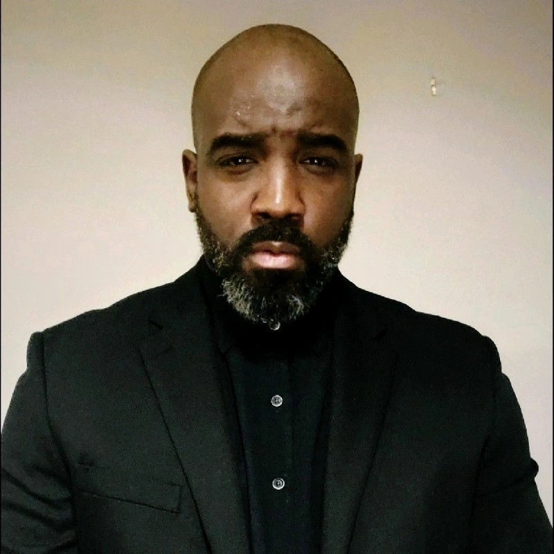

Lenard Jowers-Williams

Summary
Information Technology Field Specialist with 10 years of experience assisting teams and delivering exceptional result a strong aptitude in computers and a deep understanding of computer hardware, components, networking and software. Proficient in various programs, operating systems and applications. Team player with excellent communication skills, high quality of work, driven, highly self-motivated and able to work independently. Being an expert at finding and resolving malfunctions, using exceptional technical and communication skills to ensure minimization of downtime and optimal computer performance.
Work Experience
Information Technology Field Specialist | Morgan & Morgan | Atlanta, GA | April 2023 – Present
Performs onboarding for newly hired users while being responsible for the implementation, monitoring and maintenance of IT systems, handled AV systems setups and configurations. Lead in setting up network printers while assigning IP address and other network configurations.
Travels throughout the region to perform workstation setups, switches, UPSs, Access points repairs and/or switch outs to over 8 offices across the region in Georgia & Alabama.
Attends meeting with the IT department leadership to go over long-term strategy for implementations and network enhancements
Assist and create tickets and task across the company to streamline the day-to-day workload to myself and coworkers for incoming work request using ServiceNow and Fresh Service. Created templates to assisted with faster productivity depending on what issues are occurring within the IT department.
Performed IT audits, security audits, network analysis & monitored in stock equipment within the region.
Information Technology Specialist | Temporary Accommodations/Sedgwick | Atlanta, GA | February 2021 – April 2023
Coached newly-hired users on advanced technical procedures to diagnosis software and hardware issues.
Analyzed network perform and identify technical solutions for over 200+ users and 300+ devices for remote and local
Assisted and performed configurations, installations and upgrades for network equipment and performed testing.
Handled patch management & vulnerability management throughout the network in office and within the data center on the weekly basis on Virtual Machine Server / File Server / DNS server / Physical Servers etc.
Assisted with networking designing with firewalls, DMZ, access points, switches, servers, routers, network printers and web/file servers within the LAN/WAN while also assisting with 0365 migration.
Service Advisor | Service Advisor | Atlanta, GA | November 2020 – February 2021
Greet customers in a timely, friendly manner and obtain pertinent vehicle information
Actively promote and build rapport with the customer
Advise customers on the care and the value of maintaining their vehicles in accordance with manufacturers specifications
Generate and provide customer with a complete and accurate estimate of repair
Establish and communicate completion time of repair with customer and technician
Answer incoming service calls
Site Security Supervisor | Allied Security Supervisor | Atlanta, GA | June 2020 – October 2020
Had intermediate computer skills to operate innovative, wireless technology at client specific sites
Ability to handle crisis situations at the client site, calmly and efficiently
Capably utilize scheduling and billing software to produce reports (such as Scheduling Activity, Training Detail reports, etc.) that require interpretation and action for effective business management
Administers site safety programs outlining site-specific hazards for security officers including vehicle / driving safety as appropriate to corporate procedures.
Management Assistant | Enterprise Rent a Car | San Antonio, TX | August 2016 - May 2020
Evaluated and managed the status of business and rentals in order to maximize efficiency.
Worked with employees between two locations to improve business operations.
Built and maintained effective relationships with peers and upper management.
Maintain positive relationships with the company's existing accounts while building relationships to foster new business.
Professional Football Player| IFL - Wichita Falls Nighthawks | June 2013 - July 2016
Attended all meetings, workouts and practices on time.
Trained for over 40+ hours per week for upcoming competitions.
Exhibited strong work ethic with excellent teamwork.
Managed time effectively while traveling for games and practices.
Skills
Technical Support • Azure AD • O365 • Active Directory • Understanding of IT processes and organizations • Networking • Software procedures • Group Policy Management • Risk management and safety protocols • Service Now • Hardware • Mac OS • Windows • Salesforce • Service Now • Intune • Networking Devices & Infrastructures • Web Development • HTML
Education
Bachelor of Social Science | Washington State University | 2013
Letterman Award Varsity Football Team Scholar Student Athlete
Associate Degree of Social Studies | Iowa Western Community College | 2011
Letterman Award Varsity Football Team Scholar Student Athlete
Awards & Achievements
Employee of the Year - Temporary Accommodations/Sedgwick - 2021
Employee of the Month over 5 times - Temporary Accommodations/Sedgwick - 2021-2023
Top salesman in area over 6 times - Enterprise Rent A Car - 2016-2020
All Conference Team - Iowa Western Community College - 2010 & 2011
Full Scholarship Athlete to over 50 Divison 1 Universities - 2011